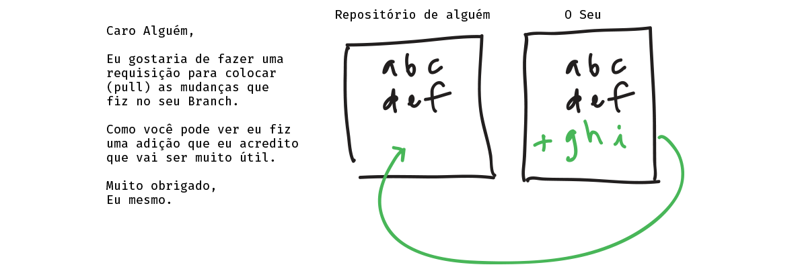

Envie uma Pull Request no repositório original Patchwork .
Pull Requests
Quando você faz mudanças e melhorias para um projeto que você fez fork, frequentemente você vai querer enviar essas alterações para o dono do original e solicitar que eles extraim as alterações no original, de modo que todos possam beneficiar das atualizações que você fez. Isto é um pull request.
Queremos adicionar você à lista de finalistas deste workshop, então faça uma pull request para o original: github.com/jlord/patchwork.
Crie uma pull request
Visite o repositório original que você fez fork no GitHub, neste caso http://github.com/jlord/patchwork.
Frequentemente GitHub vai detectar se você fez push para um branch de fork e exibe no topo do site o original. Se você ver o seu branch 'add-usuario', você pode clicar para criar uma Pull Request de lá. Se não:
- Clique no butão verde 'New pull request'.
- Selecione o branch com as mudanças que deseja enviar. Ele deve ser o único com 'add-usuario'.
Você vai ver agora uma página com os detalhes do pull request que você está no processo de apresentação. Esta página mostra os commits e mudanças, sob a forma de um diff, associado à sua pull request em comparação com o branch 'gh-pages' do original.
Se o repositório original tem uma documentação de contribuição, o GitHub vai ligar a isso. Esta é a documentação dos proprietários dos repositórios sobre como fazer melhores contribuições para esse projeto — muito útil ler se você quiser ter suas alterações adicionadas!
Se tudo na página parece bom e como você espera:
- Clique 'Create pull request'
- Adicione um título e uma descrição sobre as alterações que você está sugerindo ao autor original.
- Clique 'Send pull request'!
Toca aqui! Você enviou o seu pull request.
Se está tudo bem com o seu pull request, será feito o merge dentro de momentos. Se não, então você vai provavelmente ter alguns comentários de Reporobot sobre por que não poderia fazer merge. Se este for o caso, feche o seu pull request no GitHub, faça as mudanças necessárias para o seu branch, faça o push dessas alterações de volta para o seu fork e reenvie o seu pull request.